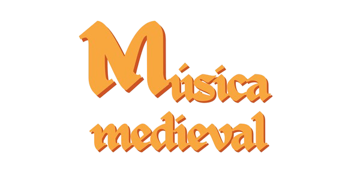

Conheça a
 Quero conhecer!

O que foi?
A Música Medieval foi uma manifestação musical europeia referente ao período da Idade Média (Queda do Império Romano em 476, século V - Início do Renascentismo em 1453, século XV); um momento histórico marcado por grande desorganização social, derivada da luta pelo estabelecimento de poder das classes elitistas e as surgentes problemáticas da época.
Fontes: Arara Neon, Wikipédia e Youtube.
Principais Gêneros
Trovadorismo: Poemas de tom satírico e/ou romântico escritos e musicalizados por trovadores (oriundo de “trovas”, poesias caracterizadas pela rima), que viajavam por toda a Europa partilhando suas canções.Fontes: Musicalidades e Brasil Escola.
Moteto: Composições caracterizadas pela polifonia (mistura de duas ou mais melodias distintas) e a mesclagem de textos com temas diversos e, geralmente, de caráter satírico.Fontes: Dicio, Michaelis UOL e Sua Pesquisa.
Cantochão: Músicas sacras (de caráter religioso) monofônicas (onde apenas uma melodia era tocada, sem acompanhamento vocal ou instrumental) incorporadas por coros nas missas católicas. Entre elas, destaca-se o Canto Gregoriano.Fontes: Arara Neon e Sua Pesquisa.
Conductus: Do latim, “conducere” (acompanhar). Foram composições polifônicas cantadas por participantes das procissões católicas, presentes principalmente no período da Ars Antiqua (Arte Antiga).Fontes: Wikipédia e Sua Pesquisa.
Hoqueto: Do francês, “hoquet” (choque, interrupção brusca, soluço). Foram composições polifônicas caracterizadas por um ritmo entrecortado, gerado pela alternância rápida entre duas ou mais melodias e momentos de silêncio.Fontes: Fontes: Wikipédia e Sua Pesquisa.